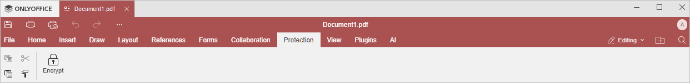

Protection tab
The Protection tab of the Form Creator allows protecting your PDF forms with a password.
The corresponding window of the Online Form Creator:
The corresponding window of the Desktop Form Creator:

Using this tab, you can:
- set a password for your PDF form,
- change passwords and delete them,
- remove PDF form protection altogether.